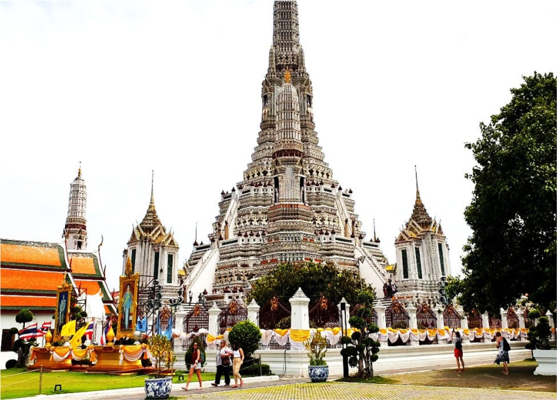
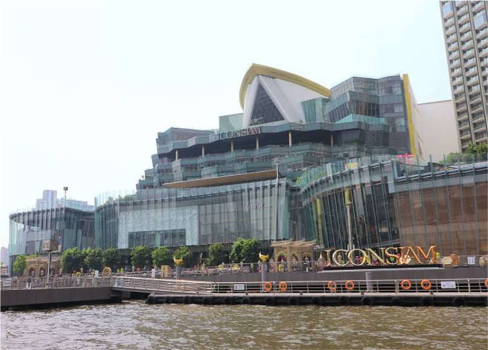

Mengunjungi Wat Arun dan Icon Siam di Hari Terakhir
Hari terakhir di Thailand datang dengan perasaan yang campur aduk. Ada
rasa senang karena hari ini kami akan mengunjungi Wat Arun, salah satu
kuil paling ikonik di Bangkok, pada pukul 10 pagi. Namun, di balik itu,
ada juga rasa sedih karena ini adalah hari terakhir kami sebelum kembali
ke Indonesia. Saya dan kakak memulai pagi dengan penuh semangat, mengisi
hari terakhir kami dengan momen yang berharga.
Setelah sarapan cepat di hotel, kami berangkat menuju Wat Arun, salah
satu kuil terkenal yang terletak di tepi Sungai Chao Phraya. Kami
memutuskan untuk naik perahu menyeberangi sungai, yang memberikan
pemandangan indah dari sungai dan hiruk-pikuk kota Bangkok yang mulai
hidup di pagi hari. Saat menara tinggi Wat Arun mulai terlihat, hati
saya berdebar kagum. Wat Arun berdiri megah dengan menara-menara yang
menjulang, keramik warna-warni berkilauan di bawah sinar matahari pagi
pukul 10 itu, memberikan kesan dramatis yang tak terlupakan.
Begitu tiba di Wat Arun, saya merasa seperti melangkah ke dunia yang
berbeda. Setiap detail kuil ini membawa ketenangan yang dalam. Menara
utamanya yang setinggi 70 meter berdiri gagah, dihiasi dengan
patung-patung dan ukiran yang begitu halus. Setiap sudut kuil ini seolah
bercerita, memberikan saya kesempatan untuk merenung dan menyerap
keindahan spiritual yang ada di hadapan saya.
Namun, di tengah kekaguman ini, saya menghadapi sedikit masalah. Kamera
saya mati, baterainya habis, dan saya tidak membawa cadangan. Perasaan
frustrasi mulai muncul, tetapi kakak saya mengingatkan bahwa terkadang,
menikmati momen tanpa gangguan teknologi adalah yang terbaik. Tanpa
kamera, saya menyadari betapa momen ini bisa dirasakan lebih dalam—bukan
dengan lensa, tetapi dengan mata dan hati yang terbuka. Wat Arun
meninggalkan kesan mendalam dalam diri saya, keindahan yang hanya bisa
dirasakan secara langsung.

Setelah puas menikmati Wat Arun, menjelang siang hari, kami memutuskan
untuk menuju Icon Siam. Pukul 1 siang, kami tiba di pusat perbelanjaan
megah yang terletak di tepi Sungai Chao Phraya. Icon Siam, yang sering
disebut sebagai “pusat belanja termegah di Bangkok,” memberikan kontras
sempurna dari kunjungan kami sebelumnya ke Wat Arun. Gedung modern
dengan arsitektur futuristik ini menawarkan suasana yang penuh dengan
toko-toko mewah, restoran internasional, dan bahkan pasar terapung kecil
yang memberikan sentuhan budaya lokal.

Kami berjalan-jalan menikmati suasana, membeli beberapa oleh-oleh kecil,
dan menikmati pemandangan sungai dari balkon gedung. Icon Siam
memberikan kami kesempatan untuk melihat sisi lain dari
Bangkok—gemerlap, cepat, dan penuh kehidupan. Di sana, kami menghabiskan
beberapa jam, merasakan kehidupan modern Bangkok sebelum akhirnya
kembali ke hotel.
Menjelang sore, sekitar pukul 5, kami kembali ke hotel untuk
bersiap-siap pulang. Setelah mengemas barang-barang, kami bersiap menuju
bandara dengan Airport Rail Link, kereta cepat yang menghubungkan pusat
kota Bangkok dengan Bandara Suvarnabhumi. Kereta ini membawa kami dengan
cepat melewati pemandangan kota yang mulai bertransisi dari siang menuju
malam. Kereta ini menjadi pilihan sempurna untuk menghindari kemacetan
lalu lintas Bangkok yang tak terduga.
Saat kereta melaju cepat di atas rel, membawa kami menuju bandara, saya
merenungi seluruh perjalanan ini. Thailand telah memberikan begitu
banyak kenangan tak terlupakan, mulai dari keindahan alam, budaya yang
kaya, hingga keramahan orang-orangnya. Setibanya di bandara sekitar
pukul 9 malam, ada rasa lega karena kami tiba tepat waktu, tetapi juga
perasaan sedih karena petualangan ini telah berakhir.
Kami menghabiskan malam di bandara, menunggu penerbangan pagi esok
harinya yang dijadwalkan lepas landas pada pukul 7 pagi. Malam terasa
panjang, tetapi juga penuh perenungan. Ini bukan hanya akhir dari sebuah
perjalanan fisik, tetapi juga perjalanan emosional yang telah memberikan
begitu banyak pelajaran.
Saat pesawat mulai mengudara, saya menatap ke luar jendela, menyaksikan
Bangkok yang perlahan-lahan mengecil. Perjalanan ini telah memberi saya
pengalaman luar biasa—dan meskipun kami pulang, kenangan ini akan terus
tersimpan dalam hati. Thailand akan selalu menjadi tempat dengan cerita
tak terlupakan.
Setiap perjalanan, baik yang panjang maupun pendek, selalu membawa
pelajaran yang tak ternilai. Wat Arun mengajarkan tentang ketenangan dan
keindahan dalam keheningan, sementara Icon Siam menunjukkan bagaimana
kemewahan modern bisa selaras dengan tradisi yang kuat. Dan di sepanjang
perjalanan ini, saya belajar bahwa keindahan hidup tidak selalu harus
diabadikan oleh kamera, tetapi harus dinikmati dengan hati dan pikiran
yang sepenuhnya hadir di saat itu.
Perjalanan bukan hanya tentang destinasi, melainkan tentang setiap
langkah kecil yang membawa kita ke sana. Setiap momen, setiap tantangan,
dan setiap keindahan yang kita alami adalah bagian dari proses tumbuh
dan belajar. Terkadang, kita terjebak dalam kekhawatiran akan hal-hal
kecil—seperti baterai kamera yang habis atau ketakutan akan
terlambat—tetapi pada akhirnya, apa yang paling berarti adalah bagaimana
kita merasakan setiap detik dari perjalanan itu.
Setiap akhir adalah awal yang baru. Meski hari ini perjalanan di
Thailand selesai, saya tahu bahwa petualangan berikutnya sudah menunggu
di depan mata. Dan seperti halnya hidup, perjalanan selalu memberikan
kita kesempatan untuk menemukan versi terbaik dari diri kita. Tidak ada
pengalaman yang terlalu kecil untuk diabaikan, karena semua itu
membentuk siapa kita saat ini.